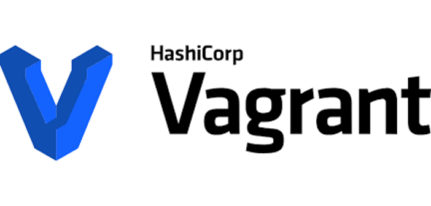

Projects
 Ansible Automation
Ansible Automation
This project is to deploy an EC2 onto a VPC using Ansible
This project was created with:
- Ansible playbook
- AWS
- YAML
 Node sample app DevEnv
Node sample app DevEnv
This project is a small part of a larger project which is setting up a dev-env of an app
This project was created with:
- Vagrant
- Virtual box
- ruby
- NodeJS
- Mongodb
- nginx

 NodeCookbookConfigMng
NodeCookbookConfigMng
This project was a configuration management to set up a Test Env using chef.
This project was created with:
- Chef
- Ruby
- NodeJS
- mongodb
- YAML
- JSON